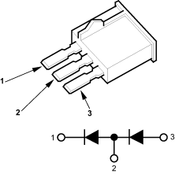

- Remove the A/C diode B from the multi-relay box.
- Check for current flow in both directions between the No. 1 and No. 2 terminals of the A/C diode B.
A/C DIODE B

Is there current flow in only one direction?
YES - Go to step 3.
NO - Replace the A/C diode B. 
- Turn the ignition switch ON (II).
- Measure the voltage between the No. 2 terminal of the A/C diode B 3P socket and body ground.
A/C DIODE B 3P SOCKET

Is there battery voltage?
YES - Go to step 5.
NO - Repair open in the wire between the radiator fan relay, fan control relay and the A/C diode B.
- Turn the ignition switch OFF.
- Reinstall the A/C diode B.
- Disconnect the A/C pressure switch 4P connector.
- Turn the ignition switch ON (II).
- Measure the voltage between the No. 3 terminal of the A/C pressure switch 4P connector and body ground.
A/C PRESSURE SWITCH 4P CONNECTOR

Wire side of female terminals
Is there battery voltage?
YES - Go to step 10.
NO - Repair open in the wire between the A/C diode B and the A/C pressure switch.
- Turn the ignition switch OFF.
- Check for continuity between the No. 1 and No. 2 terminals of the A/C pressure switch 4P connector.
A/C PRESSURE SWITCH 4P CONNECTOR

Wire side of female terminals
Is there continuity?
YES - Replace the A/C pressure switch.
NO - Repair open in the wire between the A/C pressure switch A and B.